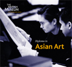

|
|
NewsDiploma in Asian Art
View the course prospectus and application form. Course brochure
(pdf format 554kb) |
Frequently asked questions
About the Course
Student Assessment Qualifications/Credit Entry Requirements/Interview Information on each Module Price/Scholarships Student Profile/Being a Student English Assistance Job Opportunities Visas/Accommodation/Disabilities Faculty About the CourseWhat are the course aims and objectives?The fundamental aim of this course is to provide students with a broad understanding of Asian art covering all major periods and most media. In addition the course will:
 What advantages are there from taking the course at the British Museum? The British Museum provides a unique opportunity to study and enjoy art from all over Asia in one of the world's greatest museums, with curators and other leading experts on China, India and South East Asia, Japan and Korea and the Islamic world. The teaching combines object based teaching within a sound academic framework. Aspects of conservation, exhibition organisation (including the opportunity to prepare and display a small exhibition in the museum), and an introduction to decorative techniques and materials will also be examined. Students will learn how to research and document objects, setting them in their cultural context. Above all they will benefit from the guidance of Museum curators and have privileged access to a world-class collection of objects. This, combined with theoretical and practical study, makes this a unique programme, and the Museum the foremost institution in the world for studies of this kind. Do I need an Asian art background to take the course? No background in Asian arts is required, but students should have a serious interest in this area. What is the course structure? Course Structure:
Tell me more about what happens during the course. A network of leading Asian Art experts are brought together to provide a challenging and stimulating lecture programme. The lecture programme is supported by field trips to other museums, galleries and private collections. Participants will visit and have close links with museums, such as the Percival David foundation for Chinese Art and the Victoria and Albert Museum together with visits to the Ashmolean in Oxford and optional visits to Paris or other overseas museums. Students will be encouraged to develop research and writing skills and will have access to the British Library. They will also have access to specialist libraries belonging to the British Museum and the School of Oriental and African Studies. The programme will provide practical opportunities and insights, including the selection and mounting of an exhibition project.Can I start the course at any point in the academic year? Each of the five course modules can be taken independently, and in any order. Where is the course located? The course is based at The British Museum Education Department, 38 Russell Square, London WC1, close to London's major concentration of public and private galleries and within walking distance of the specialist library at SOAS, the Percival David Foundation and the British Library. How often are classes held? Classes are normally held four days a week, generally Monday through Thursday, from 10:00 to 15:30. Students are given a detailed course schedule at the beginning of each term. There is not a mid-term break. Who accredits the course? The Course is accredited by Royal Holloway College: a multifaculty college of the University of London, which enjoys an international reputation for the highest quality teaching and research across the sciences, arts and humanilties (ranked 9th in the UK for research by the Financial Times December 2001 and 9th in the UK for teaching by The Guardian May 2001). Research is enhanced by strong relationships with industry and commerce in the regional, national and international arenas. Royal Holloway is home for a vibrant community of 5,500 undergraduate and postgraduate students of all ages and backgrounds and from more than 90 countries. It is famous for its Founder's Building, one of the most spectacular university buildings in the world. You can visit the Royal Holloway site at www.rhul.ac.uk. Student AssessmentHow are students assessed?The course grade is determined by the results of two essays of 3,000 words (30%), and a final three-hour exam (70%). The exam consists of two parts. In the first part, students are asked to identify five out of 11 objects, and write a full museum description of these objects. Within the course, an outline is provided indicating what should be included in these descriptions. The balance of the exam consists of essay questions, which are based on the content covered in essays written during the course. Qualifications/CreditWhat academic qualifications are received from taking the course?Those who successfully complete a single module will be awarded a Postgraduate certificate. Successful completion of three course modules provides a student with a Postgraduate Diploma. The degree is accredited by Royal Holloway College, University of London (www.rhul.ac.uk) Do you provide a way to receive credit points for the course? In addition to the award of the Postgraduate Certificate for success in individual modules, students may receive on request a transcript detailing the period of study on the programme, the modules taken and the overall marks achieved. The transcript may be supplemented by additional information with respect to the length of study and the educational level of the modules, as required. (A charge will be levied by the awarding institution for issuing transcripts). Will you provide references? The course faculty are always prepared to give confidential references to prospective employers to assist students in finding appropriate work. Advice on career opportunities is also provided What are the terms of enrolment? Those responsible for the Programme reserve the right to amend the content and timing of the courses. Where possible, notice will be given but this cannot be guaranteed. They also reserve the right to discontinue any whole or part of any programme described in this prospectus. The information on this website is as far as possible accurate at the date of publication. Entry Requirements/InterviewWhat entry requirements are there for the course?Students should normally possess a Bachelor's degree or its equivalent. Other qualifications such as published works or appropriate professional experience may also be considered. The minimum age for admission is 20. Applications from mature students are strongly encouraged. (Fluent, written and spoken English, to British Council IELTS Level 7 or TOEFL 550 or equivalent is required). Non-standard applicants are considered on their merits, and may be asked to submit written work for appraisal and/or attend an interview. What is the application procedure? Application requirements are as follows:
Early application is advisable for all courses. The fee of £3650 is payable no later than one month before the start of term. What happens in the interview process? Applicants will be invited to attend an interview with the Course Director, who will assess the candidate's commitment and aptitude. The interviews can be arranged throughout the year. Applicants will normally be tested during this interview with relevant images and will be expected to talk about them. It gives the opportunity for the interviewer to assess the applicant's visual awareness although the applicant will not be expected at this stage to give an accurate assessment of style or provenance. No special preparation for this interview is necessary. Enthusiasm and motivation are essential. (Telephone interviews can be arranged if required). How do I get an application form? Click here to download the application form. Information on each ModuleI'd like to know more about the Classical and Decorative Arts of India.From 2500BC to the present day, this course explores the monumental, fine and decorative arts of India and South Asia. The course deals with architecture, sculpture, miniature painting, carved jades, carpets, textiles, furniture, jewellery, arms and armour and the rural arts. The syllabus is broadly chronological and places the art in its religious and historical context. The course begins with an introduction to the Vedas, Buddhism, Jainism and Hinduism focusing on early Jain and Buddhist art and the principles of Hindu iconography, architecture, sculpture and wall painting. It emphasises the relationship between ritual and image in the study of Medieval Hindu sculpture and architecture. Lectures cover Buddhist, Jain and Hindu manuscript painting. Erotic sculpture and painting are also discussed.The course includes Tibetan and Himalayan sculpture and painting. The latter half of the term will explore Mughal and Rajput court art from the 16th century. It will give particular emphasis to miniature painting and jewellery. Terracottas, textiles and other rural arts will also be covered and there will be lectures on contemporary Indian painting. The course will consider issues of conservation and will provide the student with an understanding of stone and materials in sculpture and painting.I'd like to know more about the Classical and Decorative Arts of China. The arts of China are part of a continuous artistic tradition of some seven thousand years. The course will be broadly structured in a chronological fashion, concentrating particularly on the evolution of the arts in ceramics, painting and calligraphy, metalwork, sculpture, textiles, lacquer and jade carving, from Neolithic times down to the 20th century. Lectures on religion, philosophy and literature will help set the social and political histories of the differing periods into a wider context. The decorative arts, including furniture, architecture and garden design will also be explored as will various themes such as archaism, imperial and local patronage and the relationship between the use of motifs and shapes on objects of the same period but of different media. The importance of export markets and the adoption of foreign artistic styles will also be assessed. The course as in the other modules will study techniques and issues of conservation and the use of scientific research work in helping both to conserve and validate objects. I'd like to know more about the Classical and Decorative Arts of South East Asia. This module covers the arts of mainland and maritime South East Asia from prehistoric times to the present day. A wide range of material from ethnographic art to the classical arts of Buddhism, Hinduism and Islam will be discussed. Art historical, anthropological and ethnographic interpretations will be offered side by side, and it is expected that this inter-disciplinary approach will greatly enhance students’ understanding of the artistic heritage of the region. The course begins with ethnographic art and covers the arts of Oceania, the outer Indonesian Islands and New Guinea, looking particularly at the importance of fertility, the ancestors and the spirit world. At this early stage there is also an introduction to the Bronze Age and to trade in South East Asia. The next topic is Buddhism and the magnificent Buddhist and Hindu art and architecture of Burma, Thailand, Cambodia and Java. Among the many other subjects covered are textiles, ceramics, painting, lacquer-ware, metalwork, calligraphy, wood-carving and shadow puppets. I'd like to know more about the Classical and Decorative Arts of Japan and Korea. The larger part of the course is devoted to the arts of Japan, beginning with the Neolithic corded pottery that gives its name to the Jomon period and then tracing artistic and technological developments in a variety of media down to the 20th century. Emphasis will be placed on Buddhist art, particularly of the Asuka, Nara, Heian and Kamakura periods, but discussion of Shintoism will also be included, media such as painting, calligraphy, prints, ceramics, lacquer, textiles and metalwork will be among those examined in detail. Architecture and gardens, the items used in the tea ceremony, arts associated with Noh theatre, carving and export art will all be discussed. The other part of this course concentrates on the arts of Korea from the Three Kingdoms period, through the Unified Silla and Koryo, into the Choson period. Lectures on the burials of the Three Kingdoms period provide an introduction to Korean tomb architecture, painting and artefacts. Thereafter, the course concentrates on developments in Buddhist sculpture and painting, landscape painting, metalwork and the fine ceramics of the Koryo and Choson periods. Other aspects of the decorative arts, such as textiles and furniture will also be examined. Links between the arts of Japan and Korea will be identified as will their relationship with Chinese art. Artistic traditions will be viewed against the social and political circumstances as well as the religious and literary movements of the times.I'd like to know more about the Classical and Decorative Arts of the Islamic World. From the 7th century AD to the present day this course explores the origin and the evolution of the arts produced in the Muslim world: architecture, arts of the book, ceramics and metalwork, jewellery, carved stone and ivory, arms and armour, as well as textiles and carpets. There will be a focus on specific objects produced in geographical regions such as Arabia, Syria, North Africa, Iran, India and Central Asia. Among the topics covered will be the use of decorative patterns - motifs such as the arabesque and geometric ornament will be traced through different periods and regions. The course will explore what is particular to Islamic art and how artists in the Muslim world borrowed from other cultures, as well as the impact Islamic art has had on the west. The influence of the China trade, the exchange of luxury items along the Silk route, and the contacts with Europe and the Mongols in Central Asia will also be explored. The course will follow a broadly chronological structure, ensuring clarity and continuity and a coherent framework for study.Price/ScholarshipsWhat are the course fees?£3, 650 per twelve-week module, payment in advance. Are any scholarships available? A limited number of scholarships are available through the British Museum, and the Arts and Humanities Research Board, and the Gordon Darling Foundation. Please contact helgood@thebritishmuseum.ac.uk for further information. Student Profile/Being a StudentWhat's the profile of the average student?We have a broad mix of students across all ages and nationalities. Students range from graduates seeking advanced course work in Asian Arts to mature students seeking a career change. The country mix includes the UK, the US, Europe and Asia. Many of our students tell us they particularly enjoyed meeting a broad range of students with similar interests to their own. Can I audit the course? Is there a price difference? Yes, the course can be audited. We do see value in doing the full course work, as students find they learn a great deal from writing essays and preparing for the final exam. There is no price difference. I've been out of full-time education for some time, and am concerned about my ability to do essays and exams again. Applications from mature students are strongly encouraged. Two tutors are available in each course, and provide support and assistance as required. English AssistanceMy first language is not English. I'm not sure I'll be able to handle the course work.Fluent, written and spoken English, to British Council IELTS Level 7 or TOEFL 550 or equivalent is required. Many of our students do not have English as their first language, and do well in the courses. Two tutors are available in each course, and provide support and assistance as required. Extra English can be arranged for a student if required. Job OpportunitiesWhat sorts of job opportunities are available as a result of taking this course?Our students go on to a wide variety of careers within the art and museum world. Some have become gallery owners, joined auction houses, or moved into academic or museum positions. Within the course itself, students have an opportunity to meet a wide variety of people and discuss career options. Visas/Accommodation/DisabilitiesWill I need a visa to enter the UK for this course?This will depend on your country of origin. You should make all necessary checks for visas well in advance of travelling. When travelling, you should bring your letter of acceptance because the UK immigration officer may want to see this. You may also be asked by Immigration officials for evidence that you can meet the costs of school fees and accommodation while you are here. Can you provide assistance in finding accommodation? The University of London does provide accommodation assistance through a password protected website www.lon.ac.uk/accom. Password available from Diploma administrator. Please contact ajohnston@thebritishmuseum.ac.uk for further information. Are there facilities for disabled students? We will do everything we can to ensure a positive experience for students with disabilities. Please let us know in the application process if you have a disability that will require special services. FacultyWho are the faculty members for the course?One of the course strengths is our ability to draw from a wide range of experts for the course. These include:course teachers
Dr Heather Elgood Robert Knox Carol Michaelson Dr Sheila Canby Jessica Harrison-Hall Richard Blurton Victor Harris Tim Clark (Japanese Antiquities). Ashmolean Museum, Oxford Courtauld Institute University of London. De Montfort, Durham, Edinburgh. Hull, Leeds, Leiden Universities. London Institute. Musee Guimet, Paris. Percival David Foundation for Chinese Art,London. Rietberg Museum, Zurich. Rijksmuseum, Amsterdam. Royal Holloway, University of London. School of Oriental and African Studies, University of London. Victoria and Albert Museum.
|
 Bronze figure of the Buddha Amitabha, from Silla, Korea 7th - 8th century AD |
|||
|
home |
visit |
what's on |
join |
shop |
learning |
COMPASS |
world cultures |
sitemap |
contact us |
copyright
© The British Museum, 2002 |
|||||